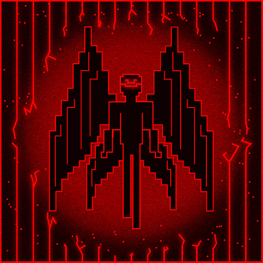
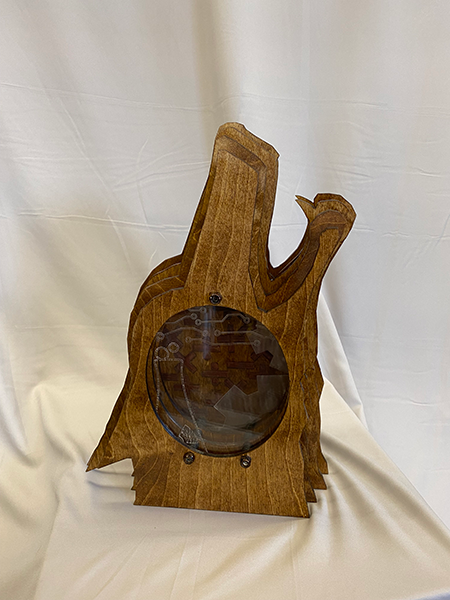
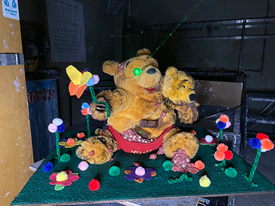
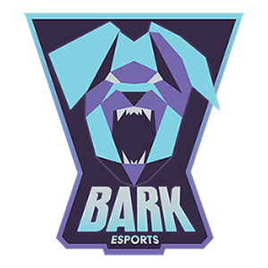
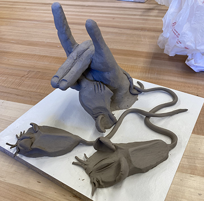
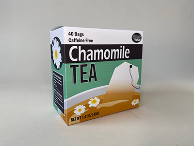

Terminal Slam
Terminal Slam is a graphic design piece made with Adobe Illustrator and Photoshop meant to visualize the song Terminal Slam by Squarepusher. The song is an electronic piece which progressively becomes more and more chaotic, then calms down again. This made me think of how a virus does the exact same thing. I decided to depict a demonic entity breaking free from containment within a computer.
STEM Wolf is a sculpture meant to bridge the gap between the fields of STEM and art. The sculpture, visually depicting everything to do with STEM through its multiple layered windows, was ultimately created with artistic means. The sculpture is meant to inspire STEM students to think and work creatively.
STEM Wolf


Pooh
Pooh is a visual representation of 2 contrasting planes coming together. The mascot Pooh is meant to embody something cute, childlike, and innocent. But in this case Pooh has been turned into an abomination. Metal, raw meat, oil, and extra limbs all grow and protrude from Pooh, turning something cute into something horrible.

BARK eSports
A logo created for a fictional eSports inspired company. For this assignment I was tasked with picking an animal and developing a logo around it. I sought to create a logo that could be seen among other professional Esports teams.
For the class Sculpture 1, I was tasked with taking an ordinary house object and incorporating it with a posed clay sculpture of a hand in pose. In this sculpture, I wanted to depict a chase between the fox (hand) and the mice (computer mice) with a symbolic meaning of using and consuming computer mice.
Fox Chasing Mice


Chamomile Tea Great Value Redesign
For this project in Packaging Design I was tasked with picking a package in desperate need of a redesign and creating one. I picked the generic Walmart brand, Great Value, and found packaging for their chamomile tea. Most Great Value designs are terrible in my opinion, and I wanted to create something that would stick out on a shelf and still give off the idea of a great value.